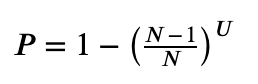
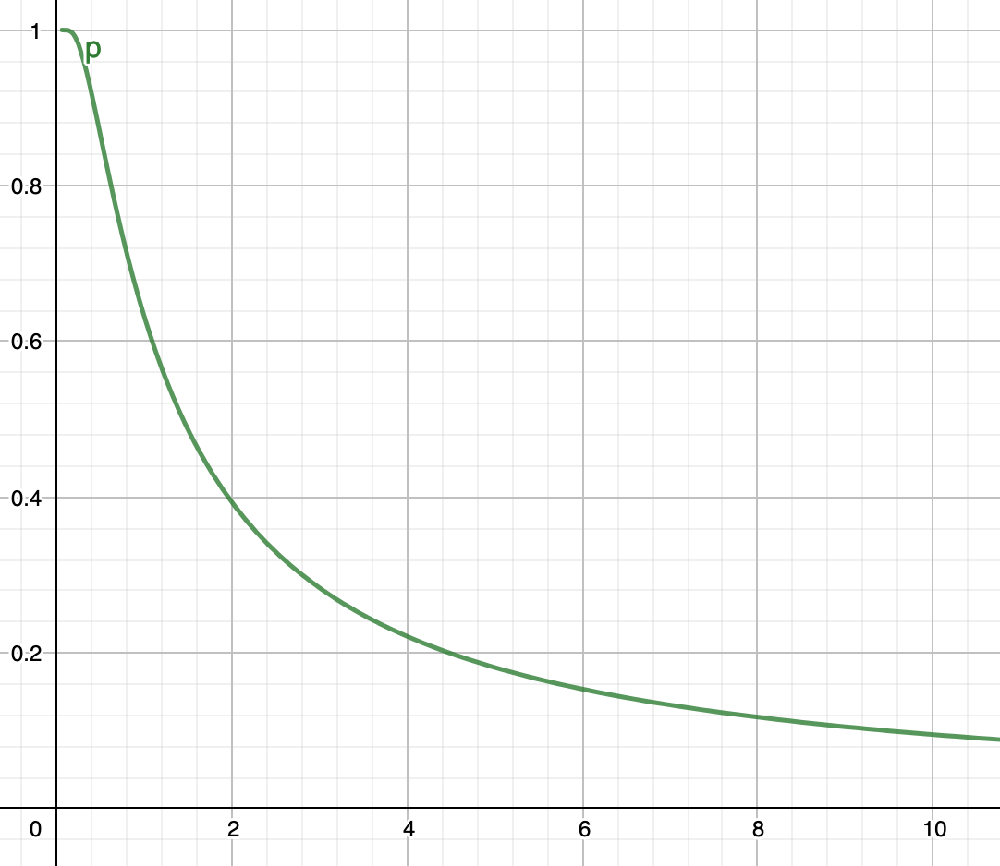

The Blob Lottery
The simplest, cheapest and fastest form of storage in the cloud is the blob. It's very bare-bones, making no attempt to compete with more high-level searchable storage offerings that help you by making your data searchable every which way. It's little more than a remote file system. But if you can put up with those limitations, you can save $$$.
Today I'm going to consider the question: if we have a dataset that we want to store in the cloud, how far should we go in breaking it down into pieces? However we decide to organise the data (indexed, sorted or just however-it-comes), there are good reasons to want to break it into pieces. Regardless of any other choices we might make, I want to see what impact this "granularity" decision will have.
My particular use case involves a dataset of many millions of items, of which thousands are updated during a nightly "processing run". A naive first guess is that I should arrange cut the data into small enough pieces so that each of these nightly batch updates is required to read and write a minimal subset. The fewer raw bytes I have to transfer over the network, the faster my process should go, right?
Worst case scenario
In many lucky scenarios you can take advantage of patterns in how data is accessed, known as locality of reference. Building your design around such assumptions can give you a huge advantage, e.g. if a blog post is requested, we can assume the comments for that blog post are about to be requested very soon, so we should store them near to each other. Sometimes the past is a guide to the future!
But here I'm going to be pessimistic and assume no such pattern can be found: the daily update selects around one in a thousand items entirely at random out of the full set. Where there's randomness, there's probability, which means our intuitions tend to skip important details and get wrong answers.
Randomness
In the tradition of rolling a die, suppose the dataset is divided into 6 equally sized pieces which we'll call pages. If you pick a random spot to update, that spot is equally likely to appear in any page, so the probability of a page being hit is 1/6. What about the probability of a page being hit at least once after two updates?
Here there's a temptation to say 2/6, like the number on the top of the fraction is the number of updates. This is our intuition, and maybe we tend toward that guess because it happens to be a good approximation if the number on the bottom of the fraction is much larger. But it isn't right, because there's a 1/6 chance that the second update will land on the same page as the first. The more pages are hit, the fewer un-hit pages remain, so the likelihood of a collision increases. The clue is in the pesky "at least once". To start with, all pages have equal probability of being hit, but once a page is hit, it stays hit, so the probability of it transitioning from un-hit to hit again on subsequent updates collapses to zero.
This kind of problem is easier to solve if you flip it around. If a page avoids being hit several times in a row, those are truly independent events. A page that remains un-hit is still in the game. The probability of a page not being hit by one update is 5/6. If it survives two unscathed, that's two independent events and we can multiply the probabilities, 5/6 * 5/6, or 25/36. We can then subtract that from 1 to get the probability of the page being hit at least once. More generally the probability of each of N pages being hit after U updates is:

This is equivalent to the fraction of N pages we could typically expect to be hit after U updates.
The inputs to the formula are integers, so it's a bit clunky for small values, but once you get into thousands of updates it smooths out into the same consistent curve at all scales:

The x-axis is N/U, so 10 means the number of pages is 10 times the number of updates. As you can see, if the number of pages equals the number of updates, most of the pages will be hit, and you need around 10 times as many pages to keep it down to 10% of pages being hit.
What this tells us
Why is this important? There are two potential performance costs involved here. If N is small, the nightly operation will read/write large numbers of irrelevant items because they happen to live in the same pages as relevant items. Our intuition says moving large amounts of data unnecessarily is wasteful so we feel an urge to avoid that. On the other hand, if N is large, we perform more separate physical read/write operations, because our data has been diced into many tiny blobs. The question is, which of these is more costly?
Back in olden times, when our data was stored in hard drives, there was the time taken to read data, mentioned in the ancient chronicles as 20ms/MB, but legend also told of a so-called seek time of 10ms. This meant that if you broke a megabyte of data up into 10 pieces that were scattered around the drive, it would take 120ms to read it all - the seek time overhead was huge. Maybe the overhead of dealing with many individual blobs will work like the seek time overhead. But this will obviously depend on how the blob storage service has been implemented. And there are lots of details about the internals of that service that we don't know.
So to answer that question, we may as well do an experiment.
Experiment time!
I'm going to use Azure Blob Storage because I have plenty of allowance to play with. The test code will run from a VM deployed in the same Azure region, to give me the fastest possible access to the storage service. This is really important - running a test like this from your laptop at home gives a very misleading impression. Inside the data centre the networking is state-of-the-art.
Suppose each item/record/whatever is 500 bytes, and there are 10 million items, so 5GB of data. Every so often I have to apply a wave of updates to a random 10,000 items. First, following my intuition, I'll try to keep the number of accessed pages down to 10%. So I know from the above formula I need to divide my items into 100,000 pages of 100 items. As we'll only be touching 10% of the pages, that will be 10,000 physical read/writes. To test both directions I will literally save a chunk of data equivalent to a page size, and then read it back again (this is the opposite order to a real update, but hopefully represents about the same amount of total work).
But what if I didn't care how much data is read? So that we don't have to hold all the data in memory, we still partition it, but this time into a mere 100 pages. This is only 1% of the number of updates, and so this pretty much guarantees all the pages will be hit, but there will only be 100 physical read/writes.
Also, the formula tells us it's not going to help us if we go for 1000 pages - it may sound like a lot, but this is only a tenth of the number of updates, and all the pages will still be hit. So if there's a seek time-like overhead, this is going to be a terrible choice for the number of pages.
| Pages | Page size | Pages hit | Read/written | Seconds |
|---|---|---|---|---|
| 1 | 5 GB | 1 | 5 GB | 66 |
| 10 | 500 MB | 10 | 5 GB | 65 |
| 100 | 50 MB | 100 | 5 GB | 68 |
| 1,000 | 5 MB | 1,000 | 5 GB | 107 |
| 10,000 | 500 KB | 6,321 | 3.16 GB | 171 |
| 100,000 | 50 KB | 9,516 | 476 MB | 137 |
| 1,000,000 | 5 KB | 9,950 | 49.8 MB | 137 |
| 10,000,000 | 500 B | 9,995 | 5 MB | 134 |
Well. As the number of pages increases, it becomes more and more likely there will be no collisions, until the number hit is roughly equal to the number of updates made (which, remember, is always 10,000). But the only thing we really care about is the total time taken. Basically we can shift 5 GB in both directions in just over a minute, as long as we don't break it up into more than a 100 or so pieces. That's only 1.33 Gbps, so slower than the raw read speed of an SSD, but we are writing too, so pretty impressive.
But as we try to break it into smaller pieces in an attempt to cut the amount of data we have to transfer, the running time goes up, and while it comes down a little, it's at least twice as slow as reading all the data. This is true even when we're only reading 1/1000th of the dataset.
Why even have lots of pages?
Of course, this does not mean that all systems that break data into smaller pieces are stupid. And this, by the way, includes popular databases that typically have quite small page sizes. In Microsoft SQL Server it's a measly 8 KB, which implies 625,000 pages, and would certainly be a poor size given the assumptions in my example scenario (even if not using cloud storage). But my example has been chosen specifically to illustrate a situation where such granular pages are not helpful, simply because my regular bulk processing runs will access 10,000 records at random from across the whole dataset, as quickly as possible. This is different from how a traditional RDBMS is typically used, where 1 or 2 records from the entire database are requested at a time by individual users, and also their access patterns are distinctly non-random. The majority of requests are aimed at recently stored records, and so the requests of current users will fall heavily on a few hundred pages that can be cached cheaply. And caching works wonders when writes are rarer than reads, which they very often are. But in my scenario, there are equal numbers of writes and reads, and the cache would constantly be defeated by randomness.
Why even have more than one page?
Supposing my scenario is applicable, and so lots of small pages would be counter-productive: why even bother to split the dataset at all? The obvious reason is that it may not fit conveniently into memory on a single server. 5 GB is not a huge amount of memory these days, but a cloud node that supports 50 GB is still pretty expensive. If you can segment the data, you have way more flexibility.
The other important reason is to support parallel processing. Break the data up into 10 to 100 partitions and you can (temporarily) spin up that many nodes to separately perform the updating. Each partition is like a little separate world. The good news about blob storage services is that they elastically scale, meaning that as you throw more parallel requests at them, they just keep serving at the same speed per request. Want your processing to go 100 times faster? Just do 100 pieces of it at the same time.
Of course it's not entirely that simple: what if the information that arrives to tell us what updates to make is also in random order? We'll need to route each piece of information the relevant partition. And we don't want to be doing that in tiny pieces, given what we know about the performance implications. If we receive 100,000 new versions of records to store, we need to split them into 100 parcels of 1000 records, one for each of our 100 partitions. The solution is to run a non-parallel first pass that constructs the input parcels as blobs, before we launch the all the parallel processing.
To get the most out of parallel processing, we need to ensure that records are evenly divided between the partitions. The records will be accessed by some key, but we don't know in advance how that key's values will be distributed (or whether any pattern will persist over time). There are a number of strategies, but if the access pattern is truly random, we will do no real harm by shuffling the records any way we like. And so we can use the simplest approach of all, which is to simply hash the key to an integer and then scale it down to the number of partitions. The advantage of this is simplicity. We don't want to write our own database, we just want to store stuff in blobs with minimal logic required to locate the data we require. The logic described here is a few lines of code.
By the way, for the kind of approach I'm using here, Azure's "hot" tier is appropriate, because you are not charged for the amount of data you transfer, only the total amount stored, and also a very small charge based on the number of individual requests you make. So there is even a financial incentive to make fewer requests for larger pieces of data, rather than more requests for smaller pieces.
Even so, we could get more sophisticated. A single index blob could be used to describe ranges of key values belonging to partitions, mapping them to integer IDs of blobs containing their records. When partitions get too large it will be necessary to split them. Supposing they shrink, we'll have to merge them. The advantage of this is that where access to keys is not random, but instead turns out to exhibit locality of reference, we'll find that a given update wave will hit far fewer pages than predicted by the random model, as the updated records will often be clustered together in the same few pages.
But has to be set against the downside: more complex code. We are drifting towards implementing a custom B+tree. And it probably isn't worth it, given the elastic scaling power of blob storage. We can churn through our 5 GB of data in just over a minute, or 150,000 records per second, even if we do it serially. If we do 10 in parallel, it goes up to 1.5 million records per second. If necessary, we can scale out to 100 partitions before any significant overhead is encountered, which seems to imply we can cover the whole dataset in under a second! This of course depends on whether the storage service is really that elastic, and how network traffic is routed inside the data centre. I haven't tested that yet…
Probably worth seeing how you get on with that kind of raw speed before committing a more complex design.